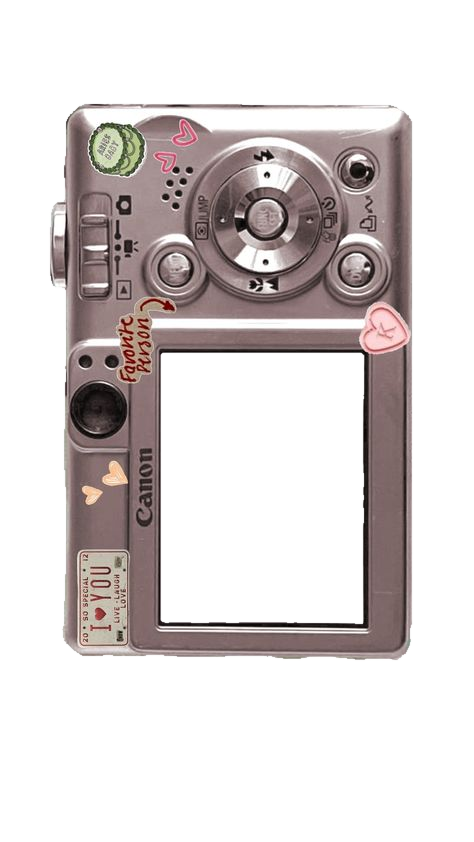
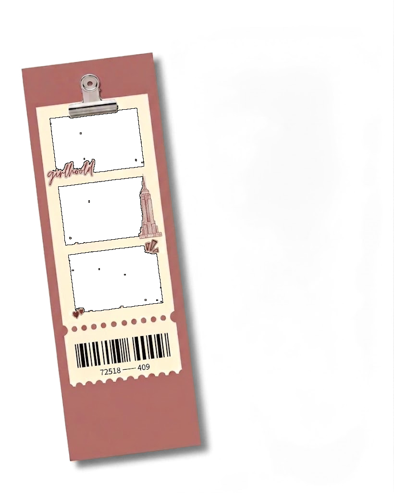

Starting camera…


Frame
Full matches your phone's camera exactly — no crop.
Ghost
Drag the ghost on the camera to move it. Pinch or scroll to resize.
Frame
Digicam upright; the window is 3:4, the same shape as a phone front camera. Composited at capture only, so the live preview stays full size.
Camera
Phones have no front LED — screen flash lights you with the display instead.
This session
Tap three shots in the order you want them, top to bottom.